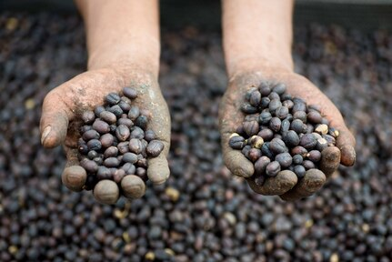
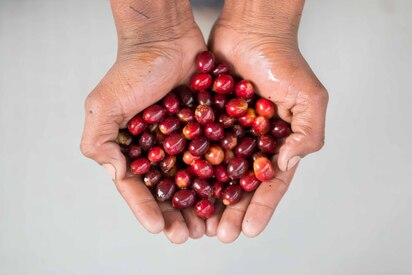
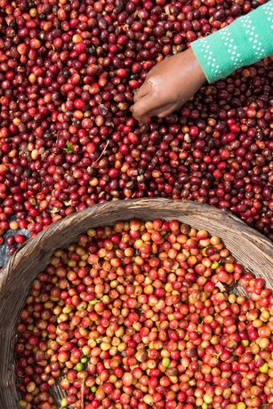
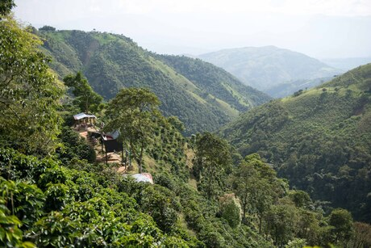
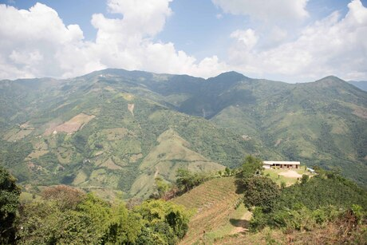
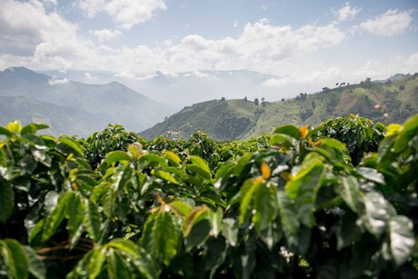

Bio
I studied Graphic Design and earned a Master’s in Digital Business at ISDI. While studying Photography at the International School of PhotoEspaña in Madrid, I worked in various roles within the marketing and creative industries, experiences that helped shape my visual language and narrative perspective. Photography has always been more than an artistic discipline for me — it is a form of personal therapy and exploration. Much of my work revolves around identity, presence, memory, and the act of observing. I often work with both digital and analog formats and my recurring theme is the search for the self, approached with honesty, intimacy, and emotional depth. My work has been exhibited in spaces such as PhotoEspaña, Anabel Segura Cultural Center, Valdemoro Cultural Center, Caja Rioja, Alcobendas City Hall, Alcobendas Cultural Center, and Injuve Madrid, among others. Selected as a finalist for the La Máquina 2025 Grant, FotoDoc, IPA Photo Awwards 2025, Urban Photo Awards 2025, LoosenArt, Premi rei En Jaume de Fotografía 2025 and Black&White Photo Awward. It has also been featured in publications including Elle, Telva, and Metrópoli.
This website is built with pure HTML, CSS and JavaScript.